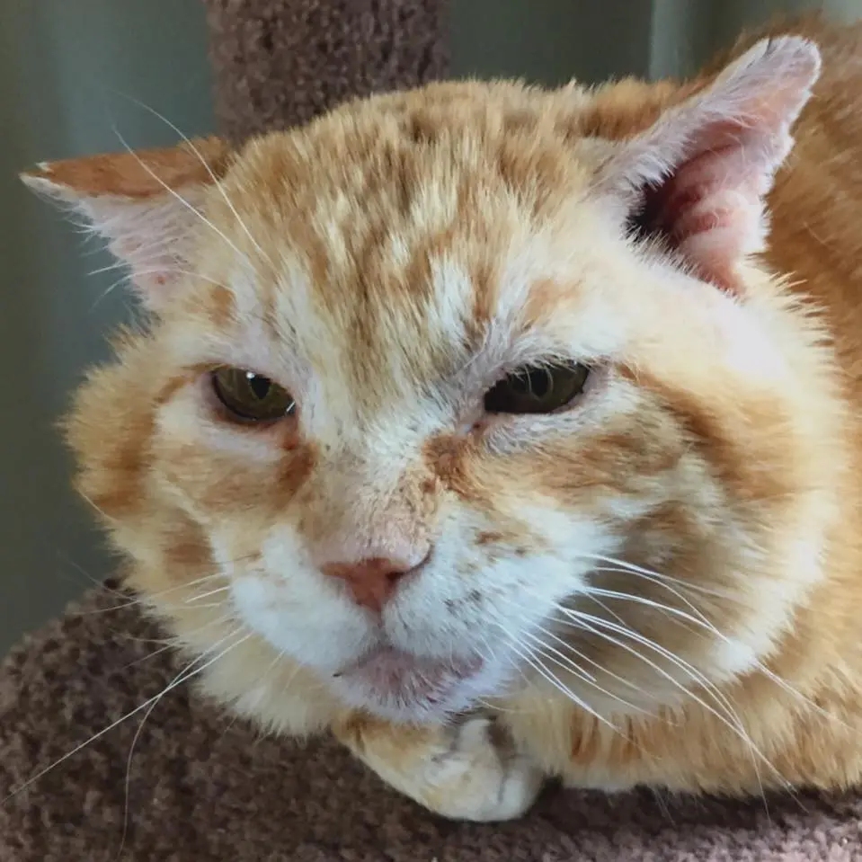

Fernsong
His Story
Most likely abandoned on the side of the highway, this old man had lived in our trailer park for around 13 years, avoiding traps like plague. We had originally thought he was feral but it later turned out he didn’t trust humans. It took us months to develop a “kennel trust” with Fernsong: using a big dog kennel, we left it wide open for him to go in, eat the food we kept refilling and leave freely. Then one night we set up the trap with fresh food and caught him soon after.
We faced some major health problems and nearly lost him once – Fernsong is an FIV positive cat, meaning his immune system is quite weakened. Battered and injured, it took months of medication, vet appointments and surgeries to get rid of a particularly nasty infection; almost as long to treat ear mites and ear infection. He had been neutered and got two of his fangs pulled as they were rotten. At this point, Fernsong is as healthy as he can be but will require more vet check-ups than a regular cat (it’s recommended for FIV positive cats to see the vet twice a year vs annually for a healthy cat).
Once in our care, Fernsong truly blossomed into the biggest cuddle-bug. He starts purring as soon as he sees us, follows us around the house and sleeps on our laps. He’s super affectionate and quite playful, though his energy doesn’t last long.
At around 15 years old, he still has plenty of love left to give. As a previously fighting tom-cat, he must go to a single cat household as he doesn’t get along with any cats. Must be indoor only.
Availability
Fernsong is avaliable for adoption.